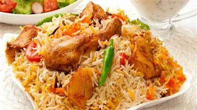
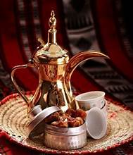

Food in Saudi Arabia
There are some of traditional Saudian food
Kabsa
Kabsa (Arabic: كبسة kabsah) or makbūs/machbūs ( مكبوس/مچبوس )is an Arabian mixed rice dish that originates from Saudi Arabia or Yemen.It is commonly regarded as a national dish in all the countries of the Gulf Cooperation Council. It can also be found in regions such as southern Iran and Gaza in Palestine.
Arabic coffee
Arabic coffee, also called Qahwa (Arabic: قهوة), is a version of the brewed coffee of Coffea arabica beans. Most Arab countries throughout the Middle East have developed distinct methods for brewing and preparing coffee. Cardamom is an often-added spice,but it can alternatively be served plain or with sugar.
